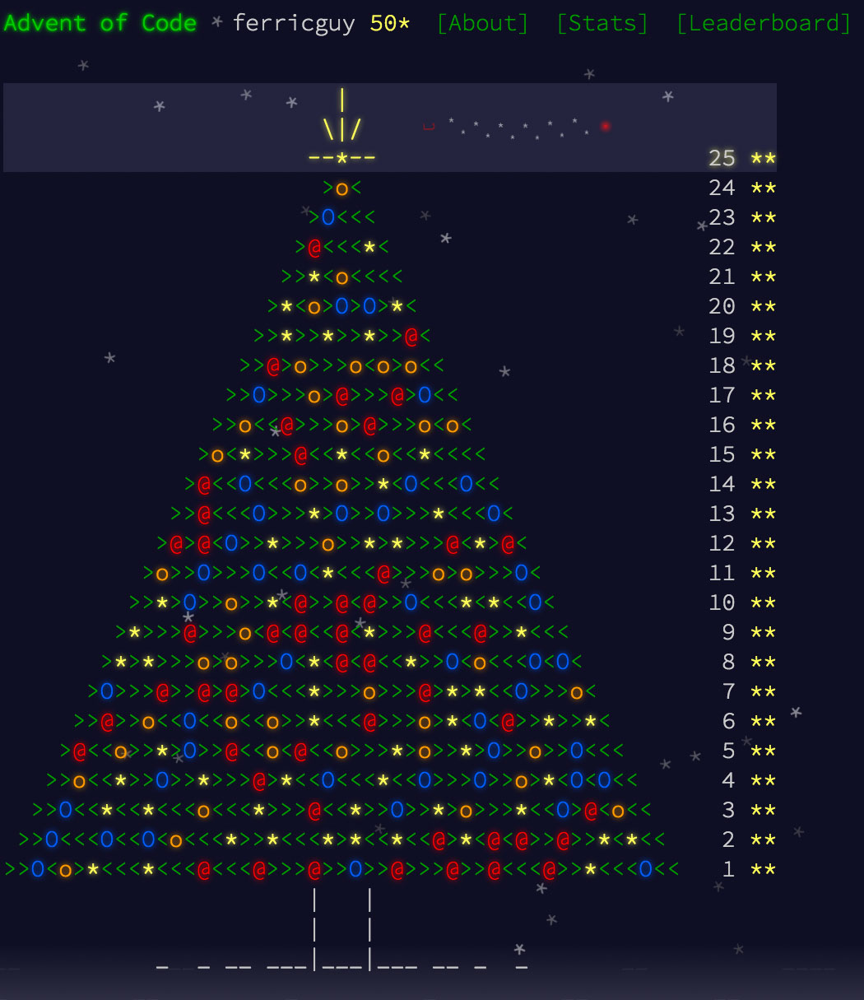

Object-Oriented Game Programming (Advent of Code, Day 21)
January 11, 2016
My fourth and final post in my Advent of Code series is devoted to two topics that I very much enjoy writing about: games and object-oriented programming. As Advent of Code progressed and the challenges became more complex, there was a definite tipping point (at least in my mind) when taking advantage of Ruby’s classes to program in an object-oriented fashion paid dividends both in terms of quickly finding a valid solution and in terms of code readability.
My solution to Day 14 was the first problem I solved using Ruby classes (and looking back at my hastily written code, I realize that the methods find_winner and find_leaders should probably be converted to class methods). I also used classes on the following two days as well as for two of the most engaging problems in the entire sequence: Days 21 and 22. Both of these problems required first simulating and then optimizing a battle of the type that’s usually found in role-playing games.
If we consider the time it took to fill the highly competitive Advent to Code leaderboard as an indicator of a problem’s difficulty, then Day 22 was the hardest day by a considerable margin as it took about 3 hours for the 100 leaderboard spots to be filled (as opposed to 20-30 minutes on an average day). As such, though Day 22 beckons to my typing fingers like a siren’s song (or a bad mixed metaphor), for all of our sakes I have chosen to analyze in this post the similar, but simpler Day 21 problem instead.
Advent of Code, Day 21 – The Problem
The scenario for this challenge (full details here) is vaguely reminiscent of one of the seminal games of my youth. The randomness of turn order and damage dealt is absent, but the basic concept of a hero possessing hit points and stat-boosting equipment fighting against an evil boss (who also has hit points and attack/defense stats) is the same. Simulating the rules given for this fight (how attack and defense works) is the programmer’s first battle.
{kind=link}
The second (and more interesting) battle is to figure out what combination of equipment (weapon, optional armor, and up to two optional rings) allows the hero to win the fight while spending the least amount of gold. In comparison to the complexities inherent in the follow-up challenge on Day 22, this puzzle is rather straightforward as there are no convoluted restrictions present and only a finite number of equipment combinations possible, a number low enough to be processed in mere microseconds. Still, there is a bit of programming to be done and design decisions to be made.
The Basics of Ruby Classes
I still remember the first time I encountered a Ruby class in the wild. I had no idea what its purpose was or what those @ signs were doing in front of variable names. Now, I can’t imagine programming in Ruby without them, especially when using Ruby for web development. Classes are a crucial part of Ruby’s object-oriented nature.
A lengthy explanation of Ruby classes would be ill-placed here (Chapter 3 of David Black’s excellent The Well-Grounded Rubyist or a Google search can help complete the picture if need be), but basically they are a way to create instances of objects that possess similar characteristics and behavior.
Say we want to represent three different cats in a computer program. (I debated putting an image of three cats sitting together here, but upon further reflection I decided that the Internet already has enough cats.) Each cat has a particular age, breed, and playfulness rating. This is what I mean by “similar characteristics”: even though the ages and breeds of the individual cats might differ, whenever we represent a cat in our program, we always will want it to have these traits. In Ruby, these inherent characteristics are called instance variables and prefaced by the @ sign:
class Cat
def initialize(age, breed, playfulness)
@age = age
@breed = breed
@playfulness = playfulness
end
end
Shared behaviors, for example, meowing, are termed instance methods (they can be called on all instances of a class), and are defined within a class:
class Cat
# ...see above...
def meow
puts "Mee-ooow! I'm #{@age} years old."
end
end
Now it’s simple to batch create cats (well, cats that are composed of bits and bytes anyway), keep track of their individual traits, and rely on them to exhibit the same behavior:
xerxes = Cat.new(3, "Persian", 5)
java = Cat.new(5, "Balinese", 8)
angara = Cat.new(7, "Siberian", 7)
xerxes.meow
# Output: Mee-ooow! I'm 5 years old.
angara.meow
# Output: Mee-ooow! I'm 7 years old.
Modeling Equipment
Reviewing the Day 21 challenge, one espies an analogous situation to our cats: weapons, armor, and rings each have a name, a cost in gold pieces, a damage value, and an armor value. Due to their common characteristics, it’s possible to combine them into one class, say an Item class, and be done with it.
However, there is a drawback to such a design choice—it would be harder to do things like restrict a character to exactly one weapon (or, if one were to continue building out the game, locate all the armor in a player’s inventory). For that reason, I have elected to make separate Weapon, Armor, and Ring subclasses that inherit from an Item superclass:
class Item
attr_reader :name, :cost, :damage, :defense
def initialize(name, cost, damage, defense)
@name = name
@cost = cost
@damage = damage
@defense = defense
end
end
class Weapon < Item
end
class Armor < Item
end
class Ring < Item
end
Now that the classes are in place, it’s easy to generate the armory that our hero can choose his equipment from. I’d like to draw particular attention to one design choice I’ve made: since the rules of the challenge declare that the hero need not equip armor or rings, I’ve created dummy values (Bare, Empty R, and Empty L) that signify a lack of equipment. When implemented in this manner, generating possible equipment combinations becomes much more streamlined and makes the absence of armor or rings a fully fledged option (which it is).
weapons = [
Weapon.new("Dagger", 8, 4, 0),
Weapon.new("Shortsword", 10, 5, 0),
Weapon.new("Warhammer", 25, 6, 0),
Weapon.new("Longsword", 40, 7, 0),
Weapon.new("Greataxe", 74, 8, 0)
]
armor = [
Armor.new("Bare", 0, 0, 0),
Armor.new("Leather", 13, 0, 1),
Armor.new("Chainmail", 31, 0, 2),
Armor.new("Splintmail", 53, 0, 3),
Armor.new("Bandedmail", 75, 0, 4),
Armor.new("Platemail", 102, 0, 5)
]
rings = [
Ring.new("Empty R", 0, 0, 0),
Ring.new("Empty L", 0, 0, 0),
Ring.new("Damage +1", 25, 1, 0),
Ring.new("Damage +2", 50, 2, 0),
Ring.new("Damage +3", 100, 3, 0),
Ring.new("Defense +1", 20, 0, 1),
Ring.new("Defense +2", 40, 0, 2),
Ring.new("Defense +3", 80, 0, 3)
]
Modeling Characters and Battles
With the swords, platemail, and magical rings all ready to go, only characters and battle sequences remain to be modeled. There are a couple design decisions to be made:
- First, while the hero and the boss share similar stats and attack mechanisms, the means by which the stats are determined (as a combination of equipment bonuses for the hero, as innate values for the boss) are different. Possible solutions include incorporating both stat determination methods into a single class or creating two subclasses of
Character, aHeroand aEnemythat are initialized differently. - Second, while it seems natural for a one-time
#attackmethod to originate from theCharacterclass, the status of the wider, multi-turn battle is less clear. Should it somehow be wrapped into theCharacterclass? Or exist on its own, in which case it could keep track a lot of different values and environmental factors easily?
In both cases, I chose the simpler option, which works perfectly in the short-term, but would probably necessitate refactoring if the RPG simulation were to increase in complexity. Why did I do this? Doesn’t it constitute sloppy design? As I found out while completing my final project at Dev Bootcamp, there is always a tension between achieving very concrete short-term goals and planning for nebulous long-term needs. When focusing too much on the short term something called technical debt is accrued, but considering the narrow scope of this project (finding the right answers for Day 21 of Advent of Code), I made a conscious and carefully weighted decision to focus almost exclusively on the short term.
(As it turned out, when completing the Day 22 challenge, I would take the foundation I had from Day 21 and build on it by splitting the Character class and creating a new Battle class.)
This is the reason why the instantiation method for my Character class looks the way it does. When creating a “hero,” his equipment is passed in through the options hash, and then his damage and defense stats are generated by private methods based on the stat boosts provided by the equipment. Creating a “boss” is simpler—the precise damage and defense stats are included in the options hash. Both character types have a name and a set number of hit points (HP), so these are required parameters. My code looks like this:
class Character
attr_reader :name, :equipment, :damage, :defense
attr_accessor :hit_points
def initialize(name, hit_points, options = {})
@name = name
@hit_points = hit_points
@equipment = options[:equipment] || []
@damage = options[:damage] || calculate_attack
@defense = options[:defense] || calculate_absorb
end
private
def calculate_attack
equipment.inject(0) { |total, item| total += item.damage }
end
def calculate_absorb
equipment.inject(0) { |total, item| total += item.defense }
end
end
Now that the character stats and hit points are in place, simulating one character attacking another according to the rules given in the challenge is straightforward enough (and should additional modifications, such as randomized damage, be requested, extremely easy to change):
class Character
# ...see above...
def attack(target)
result = self.damage - target.defense
result = 1 if result < 1
target.hit_points -= result
end
Replicating the battle flow is somewhat harder. The two characters exchange blows in turns with the hero always going first. Should the HP of one of the combatants fall to zero, then the battle is immediately over, and the method should return the winning character.
This seemed to me an excellent opportunity to utilize the rather arcane Ruby Array method #cycle, which will cycle through an array infinitely, executing a code block at each pass, until a break condition is hit. By putting the hero (who originates the duel) and boss into an array, they can then #attack each other until one of them falls (the break condition).
My resulting code is very concise, but suffers a bit in terms of readability. The appropriate target for the attack is identified by using a ternary operator. And the character’s actual attack is rather obscured in the code, as it is located in a conditional if modifier that checks for the break condition (HP less than 1 after an attack).
class Character
# ...see above...
def duel_to_the_death(enemy)
hero = self
combatants = [hero, enemy]
combatants.cycle do |character|
character == hero ? target = enemy : target = hero
return character if character.attack(target) <= 0
end
end
Note that technically speaking there is no need to simulate the battle turn-by-turn—all that’s really needed is a comparison of the number of turns it takes the hero to win with how many turns the boss needs to win (both of which can be determined by simple math), but simulating the turn-based nature of the battle allows us the pleasure of implementing the rarely-used #cycle method and makes the model much easier to modify should the rules of engagement change.
Advent of Code, Day 21 – A Solution
With the equipment, characters, and battle sequence now modeled as objects and methods, we can finally turn to the “real” programming problem that this challenge posed: what set of equipment allows the hero to win the battle while doing minimal harm to his wallet.
There are 840 possible combinations of equipment when accounting for the absence of armor and/or 1 or 2 rings as options (5 weapons * 6 armors * (8 * 7 / 2) combinations of rings). By iterating through each of these 840 combinations, marking which ones result in a victory for the hero, and then comparing the cost of the winning sets, the “thriftiest” set of arms can be determined.
My code uses a triple nested loop to generate the equipment combinations and then sends the hero into battle with each of them. The Enumerable method #min_by is then called to find the cheapest set, which is analyzed for cost and composition and printed out. Here it is in its entirety:
def find_cheapest_win(weapons, armor, rings)
winning_sets = []
weapons.each do |w|
armor.each do |a|
rings.combination(2).to_a.each do |r|
arms = [w, a, r].flatten
hero = Character.new("Knowledge", 100, { equipment: arms })
boss = Character.new("Ignorance", 103, { damage: 9, defense: 2})
if hero.duel_to_the_death(boss) == hero
winning_sets << arms
end
end
end
end
cheapest_set = winning_sets.min_by { |set| set.inject(0) { |total, item| total += item.cost } }
cheapest_cost = cheapest_set.inject(0) { |total, item| total += item.cost }
p [cheapest_cost, cheapest_set.map(&:name)]
end
The boss stats that were provided to me (HP: 103, damage: 9, defense: 2) are hardcoded into the method. When the method is called find_cheapest_win(weapons, armor, rings) (the parameters refer to the previously constructed arrays of weapons, armor, and defense), the correct result appears in the output:
[121, ["Longsword", "Chainmail", "Empty R", "Damage +2"]]
A close call for the hero as he has only 2 hit points left (and one can very well question the hero’s parsimony as it puts his life in danger and results in lots of unnecessary wounds), but a win nonetheless!
Part Two and Concluding Thoughts on Object-Oriented Game Programming
Part Two of this challenge was another optimization problem: finding the most expensive set of equipment that results in a loss. A non-DRY approach to this would be to write a #find_costliest_loss method that closely mimics the above #find_cheapest_win method, but collects losing sets and uses #max_by to find the most expensive one. My solution combines the two methods together to (mostly) reduce code repetition.
To wrap up: I’m not sure how clear it is from the preceding code without a counterexample consisting of raw numbers and single-letter variables, but an added benefit of using object-oriented approach (especially with the Ruby community’s convention that stresses making code easy for humans to read) is that it is relatively effortless to figure out what’s going on in the code at a cursory glance.
With all the named classes, named instance variables, and named local variables within methods, this style of code is less burdensome to maintain and modify. Though I took a few shortcuts (I didn’t bother adding a restriction to holding only one Weapon within the Character class, subclassing the Hero and Enemy, or creating a separate Battle class), I believe my codebase represents a solid foundation that’s easily adaptable to future demands. And, in fact, I did take advantage of my existing codebase when solving the Day 22 challenge.
Final Reflections on Advent of Code
Advent of Code was really fun to complete. It was also really fun to blog about. The variety of the challenges led me to explore a wide gamut of design concepts and rather obscure Ruby methods. The complexity of the challenges made them that much more thought-provoking. Cheers to Eric Wastl for creating it.
